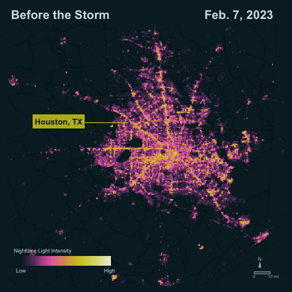
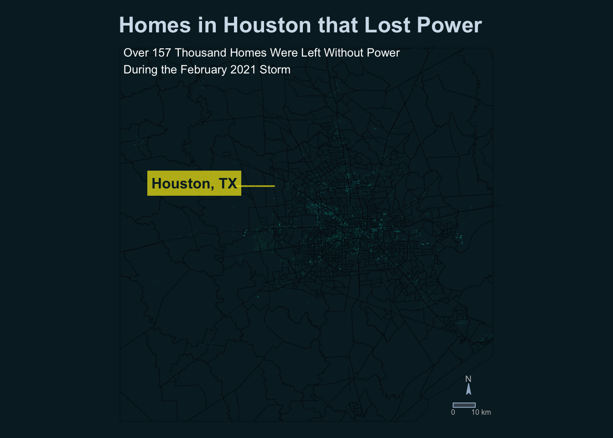
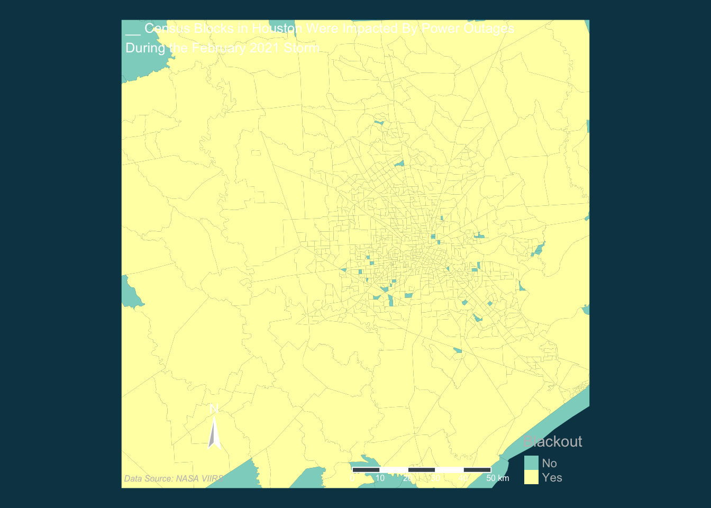
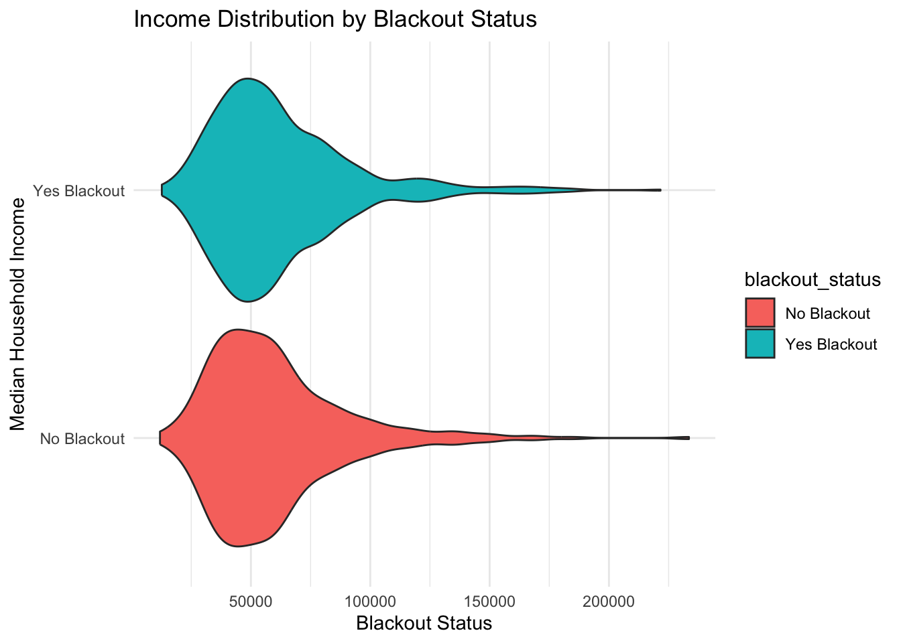

This Quarto Doc contains my geospatial analysis that explores the impact of a severe winter weather event on Houston, Texas, in February 2021, which caused a widespread power outage crisis throughout the region. I use NASA Visible Infrared Imaging Radiometer Suite (VIIRS) nighttime imagery to compare the intensity of night lights before and after the first major storm. I also overlaid the imagery with census tract data containing information on the median household income to explore the distribution of household income for areas that experienced a power outage.
Technical Highlights:
Programming in R
Vector data wrangling with sf
Raster data wrangling with terra and stars
Data visualization with tmap and ggplot
Data Descriptions:
The Night Light Imagery data is a collection of raster files containing the nighttime light intensity for the Houston area. It is from NASA Visible Infrared Imaging Radiometer Suite (VIIRS). VIIRS data is distributed through NASA’s Level-1 and Atmospheric Archive & Distribution System Distributed Active Archive Center (LAADS DAAC). There are 4 tiles stored as .tifs, two tiles to cover the Houston area before and after the storm. The data was accessed locally.
The Roads dataset contains roadways for the Houston Metro Area. The data is a subset of roads from OpenStreetMap (OSM) that intersect with Houston, prepared by Geofabrik Geofabrik. It was stored by a geopackage, the data was accessed locally.
The Buildings dataset contains polygons for buildings in the Houston Metro Area. The data is a subset of buildings from OpenStreetMap (OSM) that fall within the Houston Metro Area, prepared by Geofabrik. It was stored by a geopackage, the data was accessed locally.
The Socioeconomics data contains socioeconomic information for every home, by census tract, in the Houston Metro Area. The data is a subset of census data from the U.S. Census Bureau’s American Community Survey for census tracts in 2019. It was stored as an Esri file geodatabase.
# ---- Read in Night Light Data ----# Read in the night light raster databefore_a <-rast("data/VNP46A1/VNP46A1.A2021038.h08v05.001.2021039064328.tif") before_b <-rast("data/VNP46A1/VNP46A1.A2021038.h08v06.001.2021039064329.tif") after_a <-rast("data/VNP46A1/VNP46A1.A2021047.h08v05.001.2021048091106.tif")after_b <-rast("data/VNP46A1/VNP46A1.A2021047.h08v06.001.2021048091105.tif") # ---- Read in Buildings and Roads Data ----# Read in buildings layerbuildings <- sf::read_sf(here::here("data","gis_osm_buildings_a_free_1.gpkg"),query ="SELECT * FROM gis_osm_buildings_a_free_1 WHERE (type IS NULL AND name IS NULL) OR type in ('residential', 'apartments', 'house', 'static_caravan', 'detached')")# Read in roads layersroads <- sf::read_sf(here::here("data","gis_osm_roads_free_1.gpkg"), query ="SELECT * FROM gis_osm_roads_free_1 WHERE fclass='motorway'") # ---- Read in Census Data ----# Read in Census geodatabase layers in separately and join geometrygeom_layer <- sf::read_sf(here::here("data", "ACS_2019_5YR_TRACT_48_TEXAS.gdb"),layer ='ACS_2019_5YR_TRACT_48_TEXAS')income_layer <- sf::read_sf(here::here("data", "ACS_2019_5YR_TRACT_48_TEXAS.gdb"),layer ='X19_INCOME')# Assign geom_layer as the geometry for the income layer geom_layer <-st_as_sfc(geom_layer)texas_census <-st_sf(income_layer, geom = geom_layer) %>% dplyr::select(id = GEOID,med_inc = B19013e1)
Part 1. Mapping Power Outages from the February 2021 Winter Storm
1a. Prepare Data
Prepare raster data
# Merge the two images per time period (before & after)before_lights <-merge(before_a,before_b) after_lights <-merge(after_a,after_b)
Prepare vector data CRS
# ---- Change CRS of Vector Data ---- # Create a vector data listvector_list <-c("buildings", "roads", "texas_census")# Transform CRS to EPSG: 3083for (i in vector_list) {assign(i, if (st_crs(get(i))$epsg !=3083)st_transform(get(i), crs =3083)elseget(i))}
Crop vector layers to Houston
# ---- Crop Vector Layers to Houston ---- # Define BBox Bounds for EPSG: 3083bbox_proj <-st_bbox(c(xmin =1838039,xmax =2006680,ymin =7216740,ymax =7385430), crs =3083)# Crop buildings and census data to Houstonhouston_buildings <-st_crop(buildings, bbox_proj) houston_census <-st_crop(texas_census, bbox_proj)
1b. Calculate Change in Night Light Intensity
Calculate change in night lights and create a blackout mask
# ---- Calculate difference in night lights ---- # Diff in lightsdiff_lights <- before_lights - after_lights# Reclassify raster values for above and below the 200 threshold# WE COULD DO THE CLASS BRACKETING METHOD TO STREAMLINE?#diff_rcl <- diff_lights[diff_lights < 200] <- NA# ---- Create a blackout mask ---- rcl <-matrix(c(-Inf, 200, 0,200, Inf, 1),ncol =3, byrow =TRUE)# Apply reclassification matrixreclassified <- terra::classify(diff_lights, rcl = rcl)values(reclassified) <-as.factor(values(reclassified))# Reclassify values below 200 to be NAreclassified[reclassified ==0] <-NA# Convert SpatRaster to polygonsdiff_poly <-as.polygons(reclassified) %>%st_as_sf() %>%st_make_valid()# Trasform CRS to match vector datadiff_poly <-st_transform(diff_poly, crs =3083)# Assuming that it is okay to treat all spatial data is planarsf::sf_use_s2(TRUE)sf::sf_use_s2(FALSE)
Crop before and after night light images to Houston
# ---- Crop before and after images to Houston ---- # Define Houston Boundary Extentbbox <-st_bbox(c(xmin =-96.5,xmax =-94.5,ymin =29,ymax =30.5), crs =st_crs(4326))# Crop before and after imagesbefore_lights <-crop(before_lights, bbox)after_lights <-crop(after_lights, bbox)# ---- Crop night light rasters to exclude regions with no/very low lights for map (threshold of 50 nW cm^-2sr^-1) ----# Set areas less than 50 to NA for before lightsbefore_lights_only <- before_lightsbefore_lights_only[before_lights_only <50] <-NA# Set areas less than 50 to NA for after lightsafter_lights_only <- after_lightsafter_lights_only[after_lights_only <50] <-NA
1c. Create a Set of Maps Comparing the Before & After Night Light Images
Create a set of maps comparing night light intensities
# This section is commented out since the map has been saved as a file, leaving it here for reference on how the animation was made # Create Animation# ---- Combine Before and After Maps into an Animation ----# maps_combo <- list(before_map, after_map) # outage_animation <- tmap_animation(maps_combo,# delay = 300,# width = 600,# height = 600,# filename = "outage_animation.gif")
Below is an animation showing changes before and after the outage:
 This animation shows a map of Houston’s night light intensity on a typical night before the storm (February 7, 2023), compared to night light intensity after the storm (Feb 16, 2023), when the Houston region in Texas experienced widespread power outages. The night light intensity ranges from no light (dark blue), to pink (mid light intensity), to yellow (highest light intensity).
1d. Crop Highways and Roads from the Night Light Images
Create buffer around highways and exclude from night light difference layer
# Assuming that it is okay to treat all spatial data is planarsf::sf_use_s2(TRUE)sf::sf_use_s2(FALSE)highway_buffer <-st_buffer(roads, dist =200) %>%st_union() %>%st_make_valid() %>%st_as_sf()diff_poly <-st_make_valid(diff_poly)diff_hwy_mask <-st_difference(diff_poly, highway_buffer)
Part 2: Identifying Homes and Census Tracts Affected by Blackouts
2a. Identify Homes & Census Tracts That Were Likely Impacted By Blackouts
Select buildingstThat overlap with areas that experienced a blackout
# Make all spatial data planarsf::sf_use_s2(TRUE)sf::sf_use_s2(FALSE)# ---- Select buildings that overlap with areas that experienced a blackout ---- # Get intersection of buildings layer and areas that experienced a blackout - with highways maskedbuilding_blackouts <-st_intersects(diff_hwy_mask, houston_buildings) # Select unique buildings and parse into a listblackout_buildings_index <-unlist(building_blackouts) %>%unique()# Create new column in Houston_buildings that indicates whether or not it experienced a blackouthouston_buildings$Blackout <-"No"houston_buildings$Blackout[blackout_buildings_index] <-"Yes"# Create a layer with blackout buildings onlyhouston_buildings_blackout <- houston_buildings %>%filter(Blackout =="Yes")
2b. Create a Map of Homes in Houston That Experienced a Power Outage
Create a map of the homes in in Houston that lost power
# ---- Map of the homes in in Houston that lost power ---- # Add Layer of Homes in Houston with Power# Add census data for backgroundbuildings_map <-tm_shape(houston_census, bbox = bbox_proj) +tm_polygons(alpha =0,border.col ="#020608",lwd = .8,border.alpha =0.4) +# Add highways for backgroundtm_shape(roads) +tm_lines(col ="#020608",lwd =1,alpha =0.2) +# Add buildingstm_shape(houston_buildings_blackout, bbox = bbox_proj) +tm_polygons(col ="#00BFB2",border.col="#00BFB2",title ="Experienced Outage",alpha =0.5,lwd =0.2,border.alpha =0.5) +# Formattingtm_layout(frame =FALSE,legend.text.color="grey",legend.title.color='grey',bg.color ="#07222B",legend.show =FALSE,main.title ="Homes in Houston that Lost Power",main.title.fontface ="bold",main.title.color ="#D3DFEB") +# Add titletm_credits("Over 157 Thousand Homes Were Left Without Power\nDuring the February 2021 Storm",position =c(0.02, 0.89),size =0.8,col ="white",fontface ="italic") +# Edit scale bartm_scale_bar(color.dark ="#9BB4CC",color.light ="#435058",text.color ="grey",breaks =c(0,10)) +# Edit compasstm_compass(type ="arrow",size =1,position =c(0.89, 0.09),color.dark ="#9BB4CC",color.light ="grey",text.color ="grey",text.size = .6) +# Add label for Houston, TXtm_credits("Houston, TX ",position =c(0.09, 0.6),col ="#07222B",bg.color ="#E0D71B",bg.alpha =0.8,fontface ="bold",size =1) +tm_credits("____",position =c(0.32, 0.61),col ="#E0D71B",fontface ="bold",size =1.2,width =0.24,alpha =0.8)buildings_map

This map shows the homes in Houston, Texas that were likely impacted by the power outages, highlighted in turquoise blue. These buildings were identified by selecting buildings that overlap with areas where nightlight intensity had a drop of more than 200 nW cm-2 sr-1. There were over 157,000 homes that were identified to likely have been impacted by power outages in the greater Houston Area.
2c. Select Census Tracts That Contain Homes That Experienced a Power Outage
Identify census tracts that contain buildings that experienced a blackout
# ---- Identify census tracts that contain buildings that experienced a blackout ---- # Get intersection of buildings layer and areas that experienced a blackout - with highways maskedcensus_blackouts <-st_intersects(houston_census, houston_buildings_blackout) # Create new column in houston_buildings that indicates whether or not it experienced a blackout# Get the census tracts that have at least one building with a blackoutblackout_census_index <-which(lengths(census_blackouts) >0)# Create new column in houston_census that indicates whether or not it experienced a blackouthouston_census$Blackout <-"No"# Default to "No"houston_census$Blackout[blackout_census_index] <-"Yes"# Set "Yes" for tracts with blackout buildings
2d. Create a Map of Census Tracts in Houston That Lost Power
Create a map of the census tracts in Houston that lost power
# ---- Map of census tracts impacted by power outages ---- census_map <-tm_shape(houston_census) +tm_polygons(col ="Blackout",palette =c("Yes"="#00BFB2","No"="yellow"),border.col ="#07222B",lwd =0.2) +tm_layout(frame =FALSE,legend.text.color="grey",legend.position =c(0.89, 0.025),legend.title.color='grey',legend.title.size =0.7,legend.text.size =0.5,bg.color ="#07222B",main.title ="Census Blocks in Houston That Were Impacted\nBy Power Outages",main.title.size =1,main.title.fontface ="bold",main.title.color ="#D3DFEB") +# Edit scale bartm_scale_bar(color.dark ="#07222B",color.light ="#435058",text.color ="#07222B",breaks =c(0,10),position =0.05, 0.05) +# Edit compasstm_compass(type ="arrow",size =1,position =c(0.05, 0.09),color.dark ="#07222B",color.light ="#07222B",text.color ="#07222B",text.size = .6) +# Add label for Houston, TXtm_credits("Houston, TX ",position =c(0.09, 0.6),col ="#07222B",bg.color ="#E0D71B",bg.alpha =0.8,fontface ="bold",size =1) +tm_credits("____",position =c(0.32, 0.61),col ="#E0D71B",fontface ="bold",size =1.2,width =0.24,alpha =0.8)#table(houston_census$Blackout)census_map

This map shows the census tracts in Houston that were likely impacted by the power outages. Census tracts that contain homes that experienced a power outage are shown in turquoise blue and tracts where there were no power outages detected are shown in yellow.
2d. Create A Plot Comparing the Distributions of Median Household Income for Census Tracts that Did and Did Not Experience Power Outages
Plot income vs power outage status
# ---- Plot distribution of median household income for census tracts that did and did not experience power outages ---- ggplot(data = houston_census) +geom_violin(aes(x = med_inc, y = Blackout),fill ="#00BFB2",alpha =0.8,draw_quantiles =c(0.5)) +labs(x ="Median Annual Household Income (2019)",y ="Blackout Status",title ="Median Household Income Distribution by Blackout Status") +scale_x_continuous(labels =label_dollar()) +theme_minimal(base_size =14) +theme(legend.position ="none",plot.background =element_rect(fill ="#07222B"),panel.background =element_rect(fill ="#07222B",color =NA),text =element_text(color ="white"),axis.text =element_text(color ="white"),axis.title =element_text(color ="white"),plot.title =element_text(color ="white",size =16,face ="bold") )

This plot shows the distribution of median household income (based on 2019) by blackout status with median household income shown in U.S. dollars on the x axis and whether or not they experienced a blackout indicated on the y-axis. This figure shows that there are similar distributions between areas that did and did not experience a blackout, demonstrating that there is not a strong relationship between the two.
I found that the median household income for census tracts that experienced a blackout was slightly higher then the median for tracts that didn’t experience an outage. For this project, I did not normalize for area, so it is possible that the difference in sample size of each group could skew the observed median values. Additionally, it is possible that there could be omitted variables that impact the relationship between whether or not an area experienced an outage and the median household income.
Resources:
NASA VIIRS Level-1 and Atmospheric Archive & Distribution Active Archive Center. Night Light Imagery for February 7, 2021, and February 16, 2021. [Data] Access date: 11/15/24